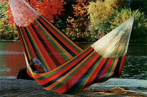

Hamaca
 De: La Frikipedia, la enciclopedia extremadamente seria.
De: La Frikipedia, la enciclopedia extremadamente seria.
«Estoy deseando irme de vacaciones a la playa y tumbarme en una hamaca»
~ Tu profesor después de expulsarte por quemar el laboratorio de Química
«Las hamacas se sujetan por cada extremo y se atan a un objeto o árbol»
~ Ferb comentando una grandiosa idea de Phineas
 Hamaca en todo su esplendor
un cacho de tela con agujeros una delicada estructura de lona que se utiliza para secarse las manos dormir y descansar. Come gasolina y en ocasiones puede estrangularte, cosa que supone una amenaza enorme para la sociedad que vive en las ciudades (y que no sabe el noble arte de la Doma de Hamacas, predominante en las zonas rurales como Mordor).
Historia
La existencia de la hamaca se remonta a tiempos muy lejanos cuando un viejo pastor se dio cuenta de que necesitaba un lugar en el que poder descansar mientras sus ovejas pastaban. Decidió aprender a coser y a fabricarse sus propias hamacas, que pronto tuvieron éxito en su feudo y un par de gilipollas vecinos decidieron comprarle los derechos y crear una empresa para comercializarlas (actualmente llamada IKEA).
Al principio eran de esparto, pero con el paso del tiempo se han ido haciendo cada vez más cutres modernizando.
Ventajas e inconvenientes de tener una hamaca
- Puedes dormir la siesta en ellas, pero si te mueves demasiado lo más probable es que te
hosties caigas al suelo.
- Si te gusta pasar frío siempre puedes meterla en el congelador, ya que su material es flexible.
- Cuando te duchas la puedes usar para secarte.
- Corres el riesgo de enredarte en ella o que te estrangule, a no ser que domines el noble arte de la Doma de Hamacas.
- También puedes pintarlas con rotuladores si no te gusta su diseño, pero si llueve lo más probable es que
cobre vida se estropee.
Materiales
- Esparto: Estas hamacas se fabricaban antiguamente. Eran más resistentes pero causaban grandes daños físicos.
- Papel: Durante un tiempo fueron la última moda en China, pero su popularidad cayó cuando un habitante decidió darse un baño con ella.
- Ladrillo: Se lanzaron al mercado como La hamaca más resistente del mundo, pero pronto dejó de comercializarse, ya que era muy difícil de sostener debido a su peso.
- Seda: Todavía se encuentran actualmente. Son más lujosas y caras, pero el gasto se compensa con
tonterías dibujos extraños que parecen manchas de Bollicao.
- Lona: Las de toda la vida. Su mayor fuente de inversión es Juan Carlos I, para quien diseñan hamacas exclusivas.
El noble arte de la Doma de Hamacas
Domador de hamacas enseñando quien manda
Justin Bieber las antiguas brujas que te amenazaban con polvo de hadas si no les dabas gasolina. De ahí viene el refrán Bruja sin gasolina, hamaca maldecida (Esto se debe a que las hamacas fuesen muy preciadas por aquella época, y por tanto, las brujas amenazaban con dañar tu hamaca si no las complacías).
Sólo 1 de cada 10 habitantes españoles conoce el uso de la Doma de Hamacas. Esta gente predomina en las zonas del norte, como Galicia y Asturias. Se puede aprender en colegios especializados en esta materia, en los que suele estudiar gente famosa como Harry Potter y Chuck Norris (véase Hogwarts).
Este arte consta de movimientos coordinados que hacen que la hamaca se vuelva mansa, y por lo tanto, que no ataque. Uno de ellos es la patada mortal, con la que se puede conseguir paralizar a la hamaca en cuestión de segundos.
Se conoce un caso en el que un andaluz se enfrentó a una hamaca sin los conocimientos del noble arte de la Doma de Hamacas. Todavía se encuentra hospitalizado.
Un caso aparte es el de la clonación a base de hamacas. Puede llegar a ser peligroso ya que estos clones arrasan con lo que ven. Además suelen ser más tontos que la media general. (Véase Homer Simpson)
¿Sabías que...
- ...las hamacas son seres vivos en estado vegetal?
- ...suspendían Física cuando iban a la universidad?
- ...cada hamaca es única salvo las fabricadas en la India?
- ...las hamacas no son alfombras porque no vuelan y no tienen flecos?
- ...si comes una hamaca es probable que sufras de indigestión?
Autor(es):
- Shadowmura
- Generibot
- Zeta
- CrisRavenclaw
Frikipedia 2005-2016, Licencia
GFDL 1.2 - Extraído por FrikiLeaks